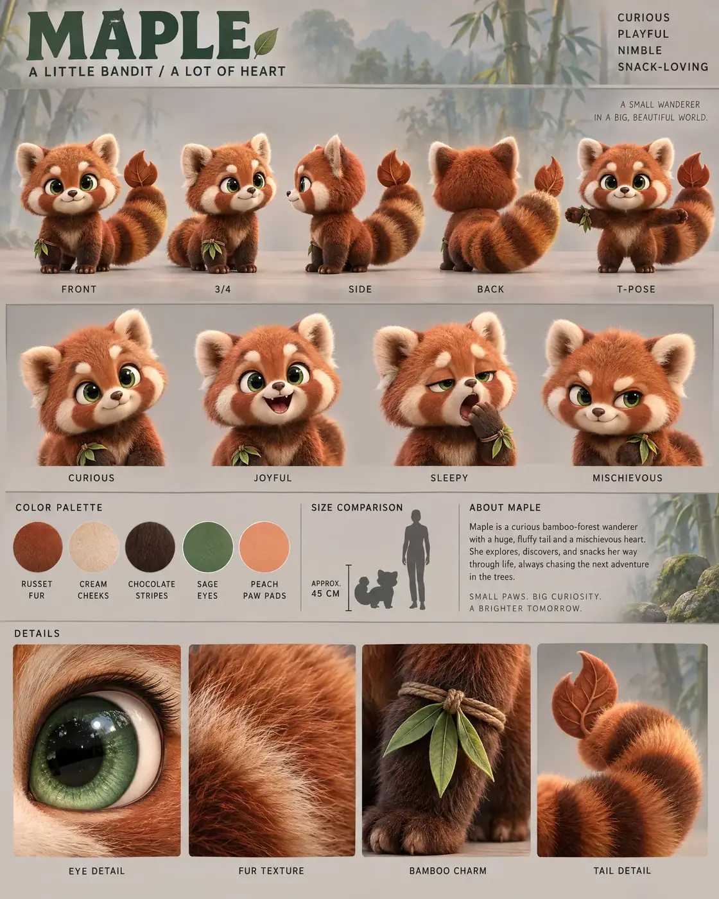

#91 of 100
Maple
Red panda
Forest & MeadowA LITTLE BANDITA LOT OF HEART
- Species
- Red panda
- Collection
- Forest & Meadow
- Height
- 45 CM
- Personality
- CURIOUSPLAYFULNIMBLESNACK-LOVING
- Colour palette
- RUSSET FURCREAM CHEEKSCHOCOLATE STRIPESSAGE EYESPEACH PAW PADS
- Expressions
- curious head tilt
- joyful open-mouth grin
- sleepy half-lidded yawn
- mischievous smirk
- Detail panels
- EYE DETAIL
- FUR TEXTURE
- BAMBOO CHARM
- TAIL DETAIL
- Character note
- Maple — a curious bamboo-forest wanderer with a huge tail and a mischievous heart
Reference sheet prompt
Cute red panda named MAPLE, with oversized emerald-green eyes, rounded cream cheek markings, small rounded ears, warm russet fur, and an enormous fluffy ringed tail ending in a curled leaf-shaped tip. A playful woodland explorer with a tiny bamboo-leaf charm tied around one wrist high-end 3D animated feature character reference sheet, original character design, polished cinematic family-animation aesthetic, portrait 4:5 presentation board, clear professional model-sheet layout, top-left header reading “MAPLE” with the tagline “A LITTLE BANDIT / A LOT OF HEART,” four personality traits in the top-right corner reading “CURIOUS / PLAYFUL / NIMBLE / SNACK-LOVING” full-body turnaround in the top section — exactly five evenly spaced views: front / 3-4 / side / back / T-pose, identical character proportions and identical accessories in every view, consistent eye line, matching scale, clean labels beneath each view row of 4 bust-length facial expressions beneath the turnaround: curious head tilt, joyful open-mouth grin, sleepy half-lidded yawn, mischievous smirk, expressive eyebrows and readable eye direction color palette swatches with clean uppercase labels: RUSSET FUR, CREAM CHEEKS, CHOCOLATE STRIPES, SAGE EYES, PEACH PAW PADS neutral warm-grey studio background with subtle low-contrast habitat accents from a misty bamboo forest: faint bamboo leaves, moss textures, and soft blue-green woodland shapes appearing only in the bio panel and detail strip, never obscuring the character, thin grey section dividers, soft cinematic 3-point lighting, gentle floor shadows middle information band containing the color swatches, a small red panda silhouette beside a human height comparison, approximate height label “APPROX. 45 CM,” and a short readable character bio describing Maple as a curious bamboo-forest wanderer with a huge tail and a mischievous heart bottom row of exactly 4 macro detail panels labeled EYE DETAIL, FUR TEXTURE, BAMBOO CHARM, TAIL DETAIL, showing a glossy emerald eye, layered plush russet fur, the small bamboo-leaf charm, and the striped fluffy tail tip 8k render, highly consistent model-sheet proportions, large rounded head, compact chibi body, short legs, tiny padded paws, smooth plush fur texture, clean editorial typography, no extra characters, no duplicate poses, no random accessories, no cropped limbs, no photorealism, no logos